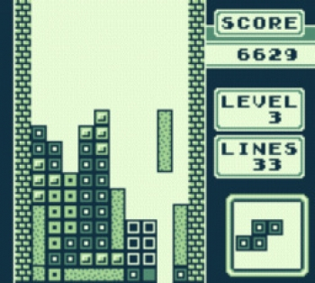
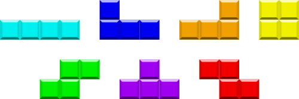
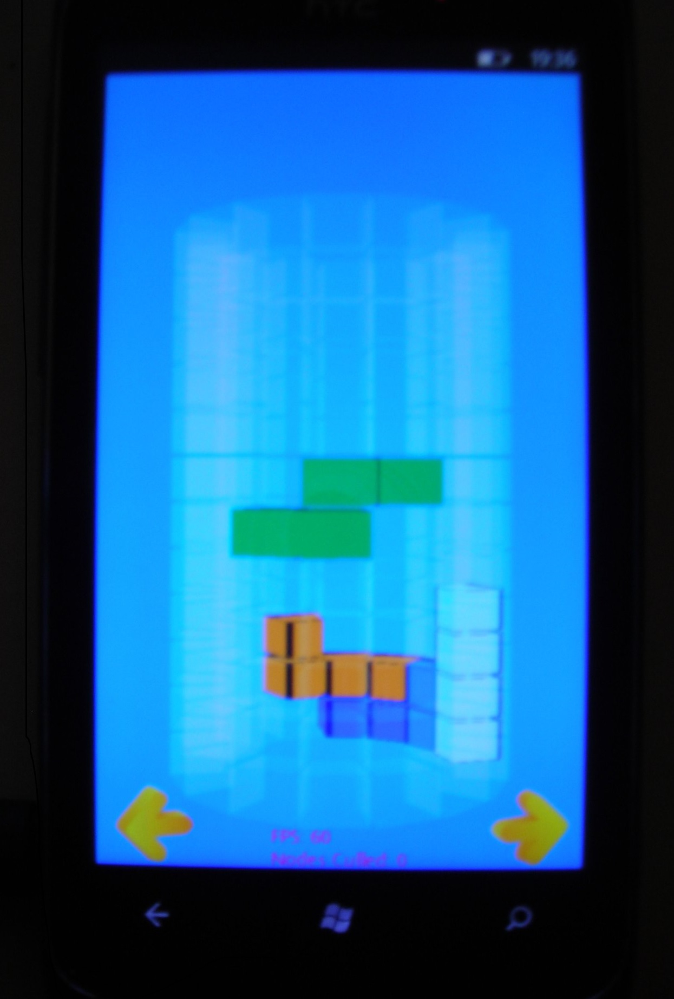

Im Rahmen der Lehrveranstaltung Game Engine Architecture wird als Semesterprojekt ein Spiel entwickelt. Als Vorlage für das Spiel soll ein Klassiker dienen.
Mein Spiel ist ein 3D-Klon des erfolgreichen Tetris-Spiels. Dabei wird das Spielfeld auf einen Zylinder gezogen. Es wird einen Singleplayer mit Highscore geben wobei alle Spielregeln unverändert übernommen werden.
Tetris ist ein 1984 von Alexei Paschitnow entwickeltes Spiel. Tetris gilt als der Klassiker schlechthin und ist das meistverkaufte Spiel weltweit.

Einzeln vom oberen Rand des rechteckigen Spielfelds herunterfallende, stets aus vier Quadraten zusammengesetzte Formen (Tetrominos) müssen vom Spieler so platziert werden, dass sie am unteren Rand horizontale, möglichst lückenlose Reihen bilden. Dabei hat der Spieler die Möglichkeit die Tetrominos in 90-Grad-Schritten passend zu drehen. Sobald eine Reihe von Quadraten komplett ist, verschwindet sie und der Spieler bekommt Punkte; alle darüberliegenden Reihen rücken nach unten und geben damit einen Teil des Spielfelds wieder frei. Werden mehrere Reihen auf einmal getilgt erhält der Spieler eine höhere Punktzahl je Reihe. Das Spiel endet, sobald sich die nicht abgebauten Reihen bis zum oberen Spielfeldrand aufgetürmt haben. Wenn eine bestimmte Gesamtzahl an Reihen entfernt worden ist, wird die Fall-Geschwindigkeit der Tetrominos erhöht. Der Spieler erreicht das nächsthöhere Level. Ziel ist es, den erreichten Highscore-Wert immer weiter zu erhöhen. Es gibt insgesamt sieben Tetrominos:

Neben dem eigentlichen Spielfeld ist eine Anzeige für die Punkte, das Level und für die Anzahl der bereits getilgten Reihen.
Wie eingangs erwähnt handelt es sich bei Roundtris um einen 3D-Klon, bei welchem das Spielfeld auf einen Zylinder gezogen wird. Alle weiteren Spielelemente werden unverändert übernommen. Ein Prototyp, welchen ich für das Windows Phone entwickelt habe, ist im Folgenden zu sehen. Er zeigt den neuen Spielaufbau auf einem Zylinder. Da hierbei Tetrominios, welche im Vordergrund liegen andere Tetrominos im Hindergrund verdecken können, werden die verdeckenden Tetrominos transparent gerendert.

Das Spiel wird über die Tastatur gesteuert. Es wird mit den Pfeiltasten (links/rechts) der Zylinder gedreht. Mit oben/unten wird das Tetromino rotiert. Mit Hilfe der Leertaste wird das Tetromino beschleunigt und sofort auf die Endposition gesetzt. Zusätzlich kann über die Maus die Kameraposition geändert werden. Wie auch im Original wird es eine Anzeige für die Score, das Level und die getilgten Reihen geben. Zusätzlich lässt sich das Spiel pausieren und es wird ein Menü (Starten, Fortsetzen, Credits, Beenden) geben.
Es ist ein Hilfemodus geplant, welcher die aktuell finale Position des gerade fallenden Tetrominos anzeigt. An dieser Position wird das Tetromino schattiert gerendert. Ist der Modus aktiviert gibt es jedoch weniger Punkte für den Spieler. Ein weiterer Hilfemodus wäre eine Art Heightmap, welche das Spielfeld von top-down zeigt. Je mehr Platz an einer Stelle ist bzw. wie "tief" das Spielfeld dort ist, wird über eine Farbe zwischen Grün und Rot visualisiert. Dieser Ansatz müsste aber zunächst prototypisch getestet werden.
Weiterhin wäre ein Time-Trial-Modus denkbar, bei dem soviele Punkte wie möglich in einer vorgebenen Zeit geschafft werden müssen.
Sobald eine spielbare Version vorliegt wird das Spiel gepolisht.